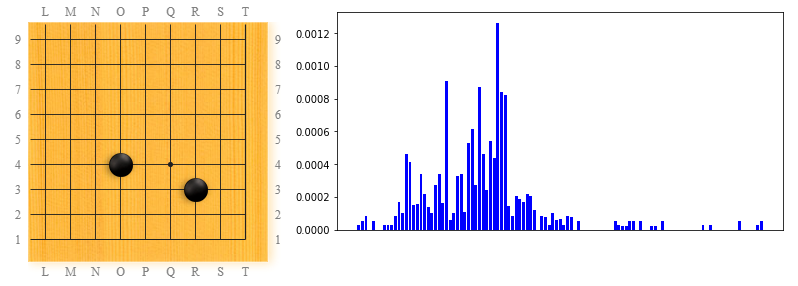

(This is a follow up from the overview of LeelaZero's training patterns page).
This article is about the corner patterns that occur in LeelaZero's training games, if we focus only on the ones that contain exactly two stones of the same color. In other words, when LeelaZero can play two moves in a row in a board quadrant, where does it like to play?
The top pattern in this category is "ikken shimari". We can see that it had a sudden surge in popularity in the second half of the training, but it fades out in most recent versions.

The 2nd most popular pattern in this category is also a very familiar one, keima shimari from a 4x4 stone. The popularity graph seems to suggest that this pattern reached a peak and it is fading away - but that may be caused by the fact that black is not allowed by white to play the O3 move that often, since white will play an early 3x3 invasion. This is just my theory, more detailed data-analysis would be needed to be sure.
As noted in the overview article as well, my theory for why ikken-shimari above became less popular in recent versions is because nikken-shimari is eating its lunch! We can see how it's getting very popular recently, and we see this pattern a lot in AlphaGo games too.

This is similar to the keima-shimari from hoshi, both as a pattern as when comparing the general shape of the popularity graph. Some detailed differences though: this became popular earlier compared to keima-shimari, and it became less popular earlier too.
Fast forward to position 11 in this category (skipping over some patterns that had an early peak and faded out): ogeima-shimari ("ogeima" means "large keima" by the way) is popular with AlphaGo too. We can see LeelaZero started to love this pattern recently more and more (after an early temporary crush somewhere around the middle of the training history). In absolute numbers, this is almost 10 times less popular compared to nikken-shimari (in position 3 above) - to notice that, one has to pay close attention at the top of the y-axis, which is different in each diagram.
Jumping to top 16 for the most popular human shimari, the keima. LeelaZero is not impressed with this at all, other than some one-time spike in the middle, around the same time ogeima-shimari had a similar spike.
Jumping a lot of places to reach another shimari that is commonly seen in human games: ogeima-shimari from a 3x3 stone. This is pretty much history, very few occurrences in recent versions.

A few more places down we can find an extension that is similar to the lower half of the Chinese opening. The history of this one seems pretty constant in LeelaZero's training, being discovered early, and having some relatively flat popularity all the way to most recent versions (with one large spike in the middle).